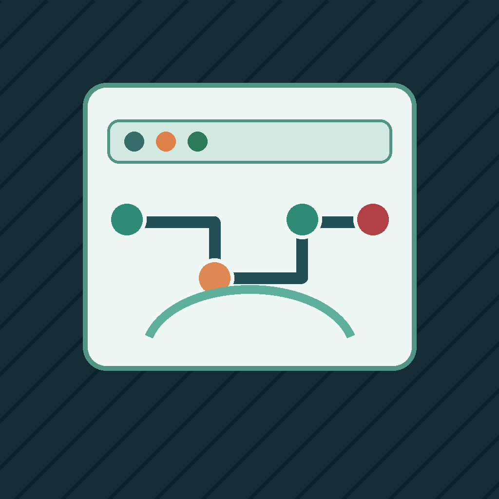

Site operations
Technical SEO & AI Crawler Audit
For SEO agencies and site owners
Find indexability and AI crawler access regressions across authorized sites.
- Starter cap
- $0.50
- Entry row
- $0.012
- Full report
- $3.00
Sources: Public pages, robots.txt, sitemap.xml, and llms.txt